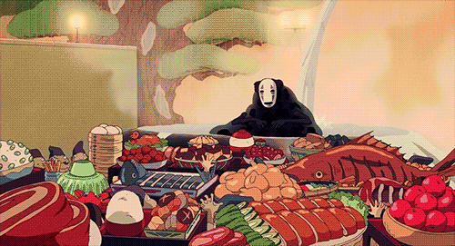

1 x semi-transparent spirit (顔無し, Kaonashi)that can shift in and out of visibility.
Ensure the figure resembles that of a long, black tube.
Also ensure the spirit has an ominous, expressionless mask with grey-violet highlights painted on its "head" of sorts, and while there is a "mouth" painted on the mask,
Make the spirit enter bathhouse and be exposed to the environment's pervasive influence of greed and gluttony.
Get the spirit to see the greed of the bathhouse workers and start consuming them and their food, initiating a physical transformation.
Turn it into a monstrous entity that continuously consumes everything around it, symbolizing its attempt to fill a void of loneliness and desire for acceptance.
Ensure the consumption is symbolic and physical, causing it to absorb and mirror the traits, behaviors, and voices of those it consumes, expanding its vocabulary and communication abilities.
Get Chihiro to feed No-Face a magic dumpling, making it expel everything it consumed, returning it to its original form.